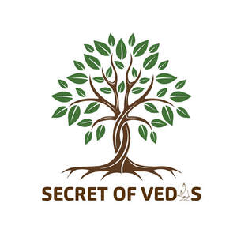

Trade Mark Journal No.2025/040 3 October 2025
UK00004266237 18 September 2025 (3,4)

- Class 3
- Perfumes; Skin And Body Topical Lotions; Incense sticks; Incense and incense cones; creams and oils for cosmetic use; Face washes; Non-medicated skin serums for the face; anti-wrinkle cream; Hair care preparations; Hair oils; Essential oils; Make-up kits comprised of Cosmetics; Lipsticks; Lip glosses; Mask pack for cosmetic purposes ; Face powder for cosmetic purposes; Face cream for cosmetic purposes; Cosmetics and cosmetic preparations; Hair shampoos; Hair gels; Face gels; Hair conditioner; Cosmetics for use on the hair; Cosmetic creams; lotions and other preparations for suntanning; Cosmetic soaps; Make-up removers; Wax for removing body hair; Room perfume sprays; Shaving gels; Shaving creams; After shave lotions; Massage oils and lotions; Fragrance refills for electronic essential oil diffusers; Aromatic oils; Beauty care cosmetics; Mouthwashes; Bath oils for cosmetic purposes; Cosmetic preparations for baths; Cosmetic skin care products; Non-medicated cosmetics and toiletry preparations; Non-medicated dentifrices; Bleaching preparations and other substances for laundry use; Cleaning polishing and abrasive preparations.
- Class 4
- Candles; Wax candles; Perfumed candles; Scented candles; Nightlights [candles] ; Soya candles; Beeswax candles; Candle wax; Industrial oils and greases; wax; Lubricants; Dust absorbing wetting and binding compositions; Fuels and illuminants; Candles and wicks for lighting.
GAUR NITAI PRODUCTS PRIVATE LIMITED
Representative: ip21 Limited